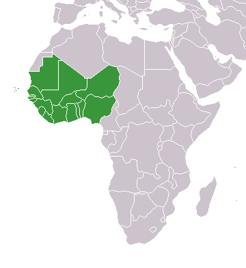
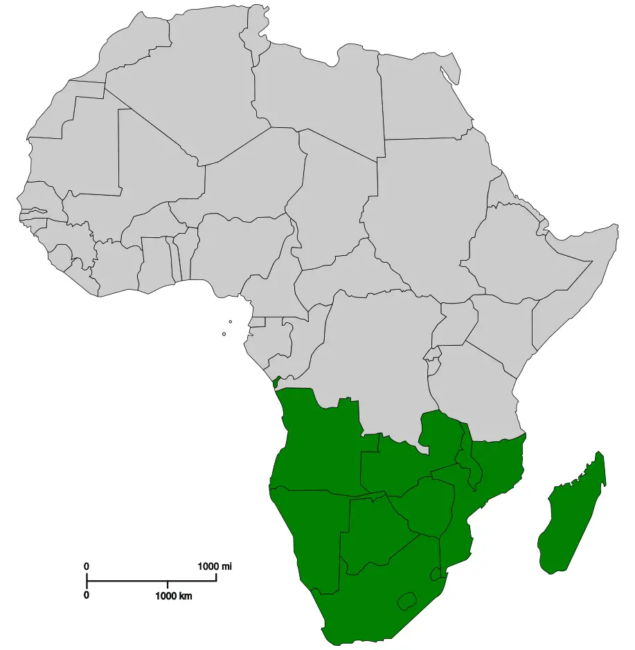

Culture
In the continent of Africa there is a wide variety of culture all around. 2 countries could be right next to each other an have very different cultures.
Northern Africa

In the north of Africa the countries are typically Islamic Countries. Most of the time they would be speaking in Arabic. In northern Africa they usa a lot of intricate designs
in architecture with geometric patterns and vibrant colours. They also were home to many historical kingdoms and civilizations like Egypt (with the pharoahs and pyramids)
or the Berber kingdoms.
West Africa

The west of Africa is a very diverse place both ethnically and religiously. There is more christianity found in west Africa adn a wider range of countries. There is lots of music
in west Africa with Instruments like the Kora, djembe and balafon. You would also see many ancient kingdoms such as Benin or the Kingdom of Mali however very unfortunately the countries
in West Africa have suffered heavily under the effects of colonisation and the trans-atlantic slave trade which has hindered the potential for many of these countries.
Southern Africa

The South of Africa is very different to the other parts. They have lots of different languages, in fact South Africa has 11 official languages alone, languages such as
Afrikaans, Zulu, Xhosa and Sotho. For art there are many rock paintings in the Drakensberg mountains and dynamic art in towns using materials like plastic strips and bike spokes.